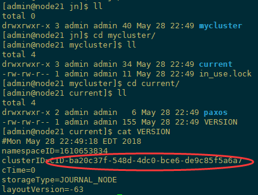

Hadoop（二）CentOS7.5搭建Hadoop2.7.6完全分布式集群
一 完全分布式集群(单点）
Hadoop官方地址：http://hadoop.apache.org/
1 准备3台客户机
1.1防火墙,静态IP,主机名
关闭防火墙，设置静态IP，主机名此处略，参考 Linux之CentOS7.5安装及克隆
1.2 修改host文件
我们希望三个主机之间都能够使用主机名称的方式相互访问而不是IP，我们需要在hosts中配置其他主机的host。因此我们在主机的/etc/hosts下均进行如下配置：

[root@node21 ~]# vi /etc/hosts 配置主机host 127.0.0.1 localhost localhost.localdomain localhost4 localhost4.localdomain4 ::1 localhost localhost.localdomain localhost6 localhost6.localdomain6 192.168.100.21 node21 192.168.100.22 node22 192.168.100.23 node23 将配置发送到其他主机（同时在其他主机上配置） [root@node21 ~]# scp -r /etc/hosts root@node22:/etc/ [root@node21 ~]# scp -r /etc/hosts root@node23:/etc/ 测试 [root@node21 ~]# ping node21 [root@node21 ~]# ping node22 [root@node21 ~]# ping node23
1.3 添加用户账号
在所有的主机下均建立一个账号admin用来运行hadoop ，并将其添加至sudoers中 [root@node21 ~]# useradd admin 添加用户通过手动输入修改密码 [root@node21 ~]# passwd admin 更改用户 admin 的密码 123456 passwd： 所有的身份验证令牌已经成功更新。 设置admin用户具有root权限 修改 /etc/sudoers 文件，找到下面一行，在root下面添加一行，如下所示： [root@node21 ~]# visudo ## Allow root to run any commands anywhere root ALL=(ALL) ALL admin ALL=(ALL) ALL 修改完毕 ：wq！ 保存退出，现在可以用admin帐号登录，然后用命令 su - ，切换用户即可获得root权限进行操作。
1.4 /opt目录下创建文件夹
1）在root用户下创建module、software文件夹 [root@node21 opt]# mkdir module [root@node21 opt]# mkdir software 2）修改module、software文件夹的所有者 [root@node21 opt]# chown admin:admin module [root@node21 opt]# chown admin:admin software 3）查看module、software文件夹的所有者 [root@node21 opt]# ll total 0 drwxr-xr-x. 5 admin admin 64 May 27 00:24 module drwxr-xr-x. 2 admin admin 267 May 26 11:56 software
2 安装配置jdk1.8
[deng@node21 ~]# rpm -qa|grep java #查询是否安装java软件： [deng@node21 ~]# rpm -e –nodeps 软件包 #如果安装的版本低于1.7，卸载该jdk 在线安装 wget --no-check-certificate --no-cookies --header "Cookie: oraclelicense=accept-securebackup-cookie" http://download.oracle.com/otn/java/jdk/8u144-b01/090f390dda5b47b9b721c7dfaa008135/jdk-8u144-linux-x64.tar.gz 这里使用本地下载然后 xftp上传到 /opt/software/ 下 [root@node21 software]# tar zxvf jdk-8u171-linux-x64.tar.gz -C /opt/module/ [root@node21 module]# mv jdk1.8.0_171 jdk1.8 设置JAVA_HOME vi /etc/profile export JAVA_HOME=/opt/module/jdk1.8 export PATH=$PATH:$JAVA_HOME/bin:$JAVA_HOME/sbin source /etc/profile 向其他节点复制jdk [root@node21 ~]# scp -r /opt/module/jdk1.8 root@node22:`pwd` [root@node21 ~]# scp -r /opt/module/jdk1.8 root@node23:`pwd` 配置各个主机下jdk的环境变量，由于我的电脑上linux都是新安装的，环境变量相同，因此直接复制到了其他主机上。如果不同的主机的环境变量不同，请手动设置 [root@node21 ~]# scp /etc/profile root@node22:/etc/ [root@node21 ~]# scp /etc/profile root@node23:/etc/ 在每个主机上都重新编译一下/etc/profile [root@node21]# source /etc/profile 测试 java -version
3 安装hadoop集群
3.1 集群部署规划
| 节点名称 | NN1 | NN2 | DN | RM | NM |
| node21 | NameNode | DataNode | NodeManager | ||
| node22 | SecondaryNameNode | DataNode | ResourceManager | NodeManager | |
| node23 | DataNode | NodeManager |
3.2 设置SSH免密钥
关于ssh免密码的设置，要求每两台主机之间设置免密码，自己的主机与自己的主机之间也要求设置免密码。 这项操作可以在admin用户下执行，执行完毕公钥在/home/admin/.ssh/id_rsa.pub
[admin@node21 ~]# ssh-keygen -t rsa
[admin@node21 ~]# ssh-copy-id node21
[admin@node21 ~]# ssh-copy-id node22
[admin@node21 ~]# ssh-copy-id node23
node1与node2为namenode节点要相互免秘钥 HDFS的HA
[admin@node22 ~]# ssh-keygen -t rsa
[admin@node22 ~]# ssh-copy-id node22
[admin@node22 ~]# ssh-copy-id node21
[admin@node22 ~]# ssh-copy-id node23
node2与node3为yarn节点要相互免秘钥 YARN的HA
[admin@node23 ~]# ssh-keygen -t rsa
[admin@node23 ~]# ssh-copy-id node23
[admin@node23 ~]# ssh-copy-id node21
[admin@node23 ~]# ssh-copy-id node22
3.3 解压安装hadoop
[admin@node21 software]# tar zxvf hadoop-2.7.6.tar.gz -C /opt/module/
4 配置hadoop集群
注意：配置文件在hadoop2.7.6/etc/hadoop/下
4.1 修改core-site.xml
[admin@node21 hadoop]$ vi core-site.xml <configuration> <!-- 指定HDFS中NameNode的地址 --> <property> <name>fs.defaultFS</name> <value>hdfs://node21:9000</value> </property> <!-- 指定hadoop运行时产生文件的存储目录 --> <property> <name>hadoop.tmp.dir</name> <value>/opt/module/hadoop-2.7.6/data/full/tmp</value> </property> </configuration>
4.2 修改hadoop-env.sh
[admin@node21 hadoop]$ vi hadoop-env.sh 修改 export JAVA_HOME=/opt/module/jdk1.8
4.3 修改hdfs-site.xml
[admin@node21 hadoop]$ vi hdfs-site.xml <configuration> <!-- 设置dfs副本数，不设置默认是3个 --> <property> <name>dfs.replication</name> <value>2</value> </property> <!-- 设置secondname的端口 --> <property> <name>dfs.namenode.secondary.http-address</name> <value>node22:50090</value> </property> </configuration>
4.4 修改slaves
[admin@node21 hadoop]$ vi slaves
node21
node22
node23
4.5 修改mapred-env.sh
[admin@node21 hadoop]$ vi mapred-env.sh 修改 export JAVA_HOME=/opt/module/jdk1.8
4.6 修改mapred-site.xml
[admin@node21 hadoop]# mv mapred-site.xml.template mapred-site.xml [admin@node21 hadoop]$ vi mapred-site.xml <configuration> <!-- 指定mr运行在yarn上 --> <property> <name>mapreduce.framework.name</name> <value>yarn</value> </property> </configuration>
4.7 修改yarn-env.sh
[admin@node21 hadoop]$ vi yarn-env.sh 修改 export JAVA_HOME=/opt/module/jdk1.8
4.8 修改yarn-site.xml
[admin@node21 hadoop]$ vi yarn-site.xml
<configuration>
<!-- reducer获取数据的方式 -->
<property>
<name>yarn.nodemanager.aux-services</name>
<value>mapreduce_shuffle</value>
</property>
<!-- 指定YARN的ResourceManager的地址 -->
<property>
<name>yarn.resourcemanager.hostname</name>
<value>node22</value>
</property>
</configuration>
4.9 分发hadoop到节点
[admin@node21 module]# scp -r hadoop-2.7.6/ admin@node22:`pwd` [admin@node21 module]# scp -r hadoop-2.7.6/ admin@node23:`pwd`
4.10 配置环境变量
[admin@node21 ~]$ sudo vi /etc/profile 末尾追加 export HADOOP_HOME=/opt/module/hadoop-2.7.6 export PATH=$PATH:$HADOOP_HOME/bin:$HADOOP_HOME/sbin 编译生效 source /etc/profile
5 启动验证集群
5.1 启动集群
如果集群是第一次启动，需要格式化namenode
[admin@node21 hadoop-2.7.6]$ hdfs namenode -format
启动Hdfs：
[admin@node21 ~]# start-dfs.sh Starting namenodes on [node21] node21: starting namenode, logging to /opt/module/hadoop-2.7.6/logs/hadoop-root-namenode-node21.out node21: starting datanode, logging to /opt/module/hadoop-2.7.6/logs/hadoop-root-datanode-node21.out node22: starting datanode, logging to /opt/module/hadoop-2.7.6/logs/hadoop-root-datanode-node22.out node23: starting datanode, logging to /opt/module/hadoop-2.7.6/logs/hadoop-root-datanode-node23.out Starting secondary namenodes [node22] node22: starting secondarynamenode, logging to /opt/module/hadoop-2.7.6/logs/hadoop-root-secondarynamenode-node22.out
启动Yarn： 注意：Namenode和ResourceManger如果不是同一台机器，不能在NameNode上启动 yarn，应该在ResouceManager所在的机器上启动yarn。
[admin@node22 ~]# start-yarn.sh starting yarn daemons starting resourcemanager, logging to /opt/module/hadoop-2.7.6/logs/yarn-root-resourcemanager-node22.out node21: starting nodemanager, logging to /opt/module/hadoop-2.7.6/logs/yarn-root-nodemanager-node21.out node23: starting nodemanager, logging to /opt/module/hadoop-2.7.6/logs/yarn-root-nodemanager-node23.out node22: starting nodemanager, logging to /opt/module/hadoop-2.7.6/logs/yarn-root-nodemanager-node22.out
jps查看进程
[admin@node21 ~]# jps 1440 NameNode 1537 DataNode 1811 NodeManager 1912 Jps [admin@node22 ~]# jps 1730 Jps 1339 ResourceManager 1148 DataNode 1198 SecondaryNameNode 1439 NodeManager [admin@node23 ~]# jps 1362 Jps 1149 DataNode 1262 NodeManager
web页面访问
5.2 Hadoop启动停止方式
1）各个服务组件逐一启动 分别启动hdfs组件： hadoop-daemon.sh start|stop namenode|datanode|secondarynamenode 启动yarn： yarn-daemon.sh start|stop resourcemanager|nodemanager 2）各个模块分开启动（配置ssh是前提）常用 start|stop-dfs.sh start|stop-yarn.sh 3）全部启动（不建议使用） start|stop-all.sh
5.3 集群时间同步
参考Ntp时间服务器与定时任务Crontab https://www.cnblogs.com/frankdeng/p/9005691.html
二 完全分布式集群（HA）
1 环境准备
1.1 修改IP
1.2 修改主机名及主机名和IP地址的映射
1.3 关闭防火墙
1.4 ssh免密登录
1.5 安装JDK，配置环境变量
2 集群规划
| 节点名称 | NN | JJN | DN | ZKFC | ZK | RM | NM |
| node21 | NameNode | JournalNode | DataNode | ZKFC | Zookeeper | NodeManager | |
| node22 | NameNode | JournalNode | DataNode | ZKFC | ZooKeeper | ResourceManager | NodeManager |
| node23 | JournalNode | DataNode | ZooKeeper | ResourceManager | NodeManager |
3 安装Zookeeper集群
安装详解参考 ： CentOS7.5搭建Zookeeper集群与命令行操作
4 安装配置Hadoop集群
4.1 解压安装Hadoop
解压 hadoop-2.7.6到/opt/module/目录下
[admin@node21 software]# tar zxvf hadoop-2.7.6.tar.gz -C /opt/module/
4.2 配置Hadoop集群
配置文件都在/opt/module/hadoop-2.7.6/etc/hadoop/下
4.2.1 修改hadoop-env.sh， mapred-env.sh ，yarn-env.sh 的JAVA环境变量
export JAVA_HOME=/opt/module/jdk1.8
4.2.2 修改 core-site.xml
[admin@node21 hadoop]$ vi core-site.xml <configuration> <!-- 把两个NameNode的地址组装成一个集群mycluster --> <property> <name>fs.defaultFS</name> <value>hdfs://mycluster</value> </property> <!-- 指定hadoop运行时产生文件的存储目录 --> <property> <name>hadoop.tmp.dir</name> <value>/opt/module/hadoop-2.7.6/data/ha/tmp</value> </property> <!-- 指定ZKFC故障自动切换转移 --> <property> <name>ha.zookeeper.quorum</name> <value>node21:2181,node22:2181,node23:2181</value> </property> </configuration>
4.2.3 修改hdfs-site.xml
[admin@node21 hadoop]$ vi hdfs-site.xml <configuration> <!-- 设置dfs副本数，默认3个 --> <property> <name>dfs.replication</name> <value>2</value> </property> <!-- 完全分布式集群名称 --> <property> <name>dfs.nameservices</name> <value>mycluster</value> </property> <!-- 集群中NameNode节点都有哪些 --> <property> <name>dfs.ha.namenodes.mycluster</name> <value>nn1,nn2</value> </property> <!-- nn1的RPC通信地址 --> <property> <name>dfs.namenode.rpc-address.mycluster.nn1</name> <value>node21:8020</value> </property> <!-- nn2的RPC通信地址 --> <property> <name>dfs.namenode.rpc-address.mycluster.nn2</name> <value>node22:8020</value> </property> <!-- nn1的http通信地址 --> <property> <name>dfs.namenode.http-address.mycluster.nn1</name> <value>node21:50070</value> </property> <!-- nn2的http通信地址 --> <property> <name>dfs.namenode.http-address.mycluster.nn2</name> <value>node22:50070</value> </property> <!-- 指定NameNode元数据在JournalNode上的存放位置 --> <property> <name>dfs.namenode.shared.edits.dir</name> <value>qjournal://node21:8485;node22:8485;node23:8485/mycluster</value> </property> <!-- 配置隔离机制，即同一时刻只能有一台服务器对外响应 --> <property> <name>dfs.ha.fencing.methods</name> <value>sshfence</value> </property> <!-- 使用隔离机制时需要ssh无秘钥登录--> <property> <name>dfs.ha.fencing.ssh.private-key-files</name> <value>/home/admin/.ssh/id_rsa</value> </property> <!-- 声明journalnode服务器存储目录--> <property> <name>dfs.journalnode.edits.dir</name> <value>/opt/module/hadoop-2.7.6/data/ha/jn</value> </property> <!-- 关闭权限检查--> <property> <name>dfs.permissions.enable</name> <value>false</value> </property> <!-- 访问代理类：client，mycluster，active配置失败自动切换实现方式--> <property> <name>dfs.client.failover.proxy.provider.mycluster</name> <value>org.apache.hadoop.hdfs.server.namenode.ha.ConfiguredFailoverProxyProvider</value> </property> <!-- 配置自动故障转移--> <property> <name>dfs.ha.automatic-failover.enabled</name> <value>true</value> </property> <configuration>
4.2.4 修改mapred-site.xml
[admin@node1 hadoop]# mv mapred-site.xml.template mapred-site.xml [admin@node1 hadoop]# vi mapred-site.xml <configuration> <!-- 指定mr框架为yarn方式 --> <property> <name>mapreduce.framework.name</name> <value>yarn</value> </property> <!-- 指定mr历史服务器主机,端口 --> <property> <name>mapreduce.jobhistory.address</name> <value>node21:10020</value> </property> <!-- 指定mr历史服务器WebUI主机,端口 --> <property> <name>mapreduce.jobhistory.webapp.address</name> <value>node21:19888</value> </property> <!-- 历史服务器的WEB UI上最多显示20000个历史的作业记录信息 --> <property> <name>mapreduce.jobhistory.joblist.cache.size</name> <value>20000</value> </property> <!--配置作业运行日志 --> <property> <name>mapreduce.jobhistory.done-dir</name> <value>${yarn.app.mapreduce.am.staging-dir}/history/done</value> </property> <property> <name>mapreduce.jobhistory.intermediate-done-dir</name> <value>${yarn.app.mapreduce.am.staging-dir}/history/done_intermediate</value> </property> <property> <name>yarn.app.mapreduce.am.staging-dir</name> <value>/tmp/hadoop-yarn/staging</value> </property> </configuration>
4.2.5 修改 slaves
[admin@node21 hadoop]$ vi slaves
node21
node22
node23
4.2.6 修改yarn-site.xml
[admin@node21 hadoop]$ vi yarn-site.xml <configuration> <!-- reducer获取数据的方式 --> <property> <name>yarn.nodemanager.aux-services</name> <value>mapreduce_shuffle</value> </property> <!--启用resourcemanager ha--> <property> <name>yarn.resourcemanager.ha.enabled</name> <value>true</value> </property> <!--声明两台resourcemanager的地址--> <property> <name>yarn.resourcemanager.cluster-id</name> <value>rmCluster</value> </property> <property> <name>yarn.resourcemanager.ha.rm-ids</name> <value>rm1,rm2</value> </property> <property> <name>yarn.resourcemanager.hostname.rm1</name> <value>node22</value> </property> <property> <name>yarn.resourcemanager.hostname.rm2</name> <value>node23</value> </property> <!--指定zookeeper集群的地址--> <property> <name>yarn.resourcemanager.zk-address</name> <value>node21:2181,node22:2181,node23:2181</value> </property> <!--启用自动恢复--> <property> <name>yarn.resourcemanager.recovery.enabled</name> <value>true</value> </property> <!--指定resourcemanager的状态信息存储在zookeeper集群--> <property> <name>yarn.resourcemanager.store.class</name> <value>org.apache.hadoop.yarn.server.resourcemanager.recovery.ZKRMStateStore</value> </property> </configuration>
4.2.6 拷贝hadoop到其他节点
[admin@node21 module]# scp -r hadoop-2.7.6/ admin@node22:/opt/module/ [admin@node21 module]# scp -r hadoop-2.7.6/ admin@node23:/opt/module/
4.2.7 配置Hadoop环境变量
[admin@node21 ~]$ sudo vi /etc/profile 末尾追加 export HADOOP_HOME=/opt/module/hadoop-2.7.6 export PATH=$PATH:$HADOOP_HOME/bin:$HADOOP_HOME/sbin 编译生效 source /etc/profile
5 启动集群
1）在各个JournalNode节点上，输入以下命令启动journalnode服务：（前提zookeeper集群已启动）
[admin@node21 ~]$ hadoop-daemon.sh start journalnode [admin@node22 ~]$ hadoop-daemon.sh start journalnode [admin@node23 ~]$ hadoop-daemon.sh start journalnode
启动Journalnde是为了创建/data/ha/jn,此时jn里面是空的
2）在[nn1]上，对namenode进行格式化，并启动：
[admin@node21 ~]$ hdfs namenode -format
格式化namenode，此时jn里面会产生集群ID等信息

另外，/data/ha/tmp也会产生如下信息
启动nn1上namenode
[admin@node21 current]$ hadoop-daemon.sh start namenode starting namenode, logging to /opt/module/hadoop-2.7.6/logs/hadoop-admin-namenode-node21.out
3）在[nn2]上，同步nn1的元数据信息：
[admin@node22 ~]$ hdfs namenode -bootstrapStandby
4）启动[nn2]：
[admin@node22 ~]$ hadoop-daemon.sh start namenode
5）在[nn1]上，启动所有datanode
[admin@node21 ~]$ hadoop-daemons.sh start datanode
6）查看web页面此时显示
7）手动切换状态，在各个NameNode节点上启动DFSZK Failover Controller，先在哪台机器启动，哪个机器的NameNode就是Active NameNode
[admin@node21 ~]$ hadoop-daemin.sh start zkfc
[admin@node22 ~]$ hadoop-daemin.sh start zkfc
或者强制手动其中一个节点变为Active
[admin@node21 data]$ hdfs haadmin -transitionToActive nn1 --forcemanual
Web页面查看

8）自动切换状态，需要初始化HA在Zookeeper中状态，先停掉hdfs服务，然后随便找一台zookeeper的安装节点
[admin@node21 current]$ hdfs zkfc -formatZK
查看，此时会产生一个hadoop-ha的目录
[root@node22 ~]# zkCli.sh
启动hdfs服务，查看namenode状态
[admin@node21 ~]$ start-hdfs.sh
9）验证
（1）将Active NameNode进程kill
kill -9 namenode的进程id
（2）将Active NameNode机器断开网络
service network stop
如果测试不成功，则可能是配置错误。检查zkfc守护进程以及NameNode守护进程的日志，以便进一步诊断问题。
10）启动yarn
（1）在node22中执行：
[admin@node22 ~]$ start-yarn.sh
（2）在node23中执行：
[admin@node23 ~]$ yarn-daemon.sh start resourcemanager
（3）查看服务状态
[admin@node22 ~]$ yarn rmadmin -getServiceState rm1 active [admin@node22 ~]$ yarn rmadmin -getServiceState rm2 standby
4） 验证高可用（略）
6 测试集群
1）查看进程
[admin@node21 ~]$ start-dfs.sh [admin@node22 ~]$ start-yarn.sh [admin@node23 ~]$ yarn-daemon.sh start resourcemanager
[admin@node21 ~]$ jps 11298 NodeManager 10868 DataNode 11065 JournalNode 11210 DFSZKFailoverController 1276 QuorumPeerMain 11470 NameNode 11436 Jps [admin@node22 ~]$ jps 7168 DataNode 7476 ResourceManager 7941 Jps 7271 JournalNode 1080 QuorumPeerMain 7352 DFSZKFailoverController 7594 NodeManager 7099 NameNode [admin@node23 ~]$ jps 3554 ResourceManager 3204 DataNode 3301 JournalNode 3606 Jps 3384 NodeManager 1097 QuorumPeerMain
2）任务提交
2.1 上传文件到集群
[admin@node21 ~]$ hadoop fs -mkdir -p /user/admin/input [admin@node21 ~]$ mkdir -p /opt/wcinput/ [admin@node21 ~]$ vi /opt/wcinput/wc.txt [admin@node21 ~]$ hadoop fs -put /opt/wcinput/wc.txt /user/admin/input
wc.txt 文本内容为


hadoop spark storm
hbase hive sqoop
hadoop flink flume
spark hadoop
2.2 上传文件后查看文件存放在什么位置
文件存储路径 [admin@node21 subdir0]$ pwd /opt/module/hadoop-2.7.6/data/ha/tmp/dfs/data/current/BP-1244373306-192.168.100.21-1527653416622/current/finalized/subdir0/subdir0 查看文件内容 [admin@node21 subdir0]$ cat blk_1073741825 hadoop spark storm hbase hive sqoop hadoop flink flume spark hadoop
2.3 下载文件
[admin@node21 opt]$ hadoop fs -get /user/admin/input/wc.txt
2.4 执行wordcount程序
[admin@node21 ~]$ hadoop jar /opt/module/hadoop-2.7.6/share/hadoop/mapreduce/hadoop-mapreduce-examples-2.7.6.jar wordcount /user/admin/input /user/admin/output
执行过程
18/05/30 02:51:39 INFO input.FileInputFormat: Total input paths to process : 1 18/05/30 02:51:40 INFO mapreduce.JobSubmitter: number of splits:1 18/05/30 02:51:40 INFO mapreduce.JobSubmitter: Submitting tokens for job: job_1527660052824_0001 18/05/30 02:51:42 INFO impl.YarnClientImpl: Submitted application application_1527660052824_0001 18/05/30 02:51:43 INFO mapreduce.Job: The url to track the job: http://node22:8088/proxy/application_1527660052824_0001/ 18/05/30 02:51:43 INFO mapreduce.Job: Running job: job_1527660052824_0001 18/05/30 02:52:33 INFO mapreduce.Job: Job job_1527660052824_0001 running in uber mode : false 18/05/30 02:52:33 INFO mapreduce.Job: map 0% reduce 0% 18/05/30 02:53:04 INFO mapreduce.Job: map 100% reduce 0% 18/05/30 02:53:17 INFO mapreduce.Job: map 100% reduce 100% 18/05/30 02:53:19 INFO mapreduce.Job: Job job_1527660052824_0001 completed successfully 18/05/30 02:53:19 INFO mapreduce.Job: Counters: 49 File System Counters FILE: Number of bytes read=102 FILE: Number of bytes written=250513 FILE: Number of read operations=0 FILE: Number of large read operations=0 FILE: Number of write operations=0 HDFS: Number of bytes read=188 HDFS: Number of bytes written=64 HDFS: Number of read operations=6 HDFS: Number of large read operations=0 HDFS: Number of write operations=2 Job Counters Launched map tasks=1 Launched reduce tasks=1 Data-local map tasks=1 Total time spent by all maps in occupied slots (ms)=25438 Total time spent by all reduces in occupied slots (ms)=10815 Total time spent by all map tasks (ms)=25438 Total time spent by all reduce tasks (ms)=10815 Total vcore-milliseconds taken by all map tasks=25438 Total vcore-milliseconds taken by all reduce tasks=10815 Total megabyte-milliseconds taken by all map tasks=26048512 Total megabyte-milliseconds taken by all reduce tasks=11074560 Map-Reduce Framework Map input records=4 Map output records=11 Map output bytes=112 Map output materialized bytes=102 Input split bytes=105 Combine input records=11 Combine output records=8 Reduce input groups=8 Reduce shuffle bytes=102 Reduce input records=8 Reduce output records=8 Spilled Records=16 Shuffled Maps =1 Failed Shuffles=0 Merged Map outputs=1 GC time elapsed (ms)=558 CPU time spent (ms)=8320 Physical memory (bytes) snapshot=308072448 Virtual memory (bytes) snapshot=4159348736 Total committed heap usage (bytes)=165810176 Shuffle Errors BAD_ID=0 CONNECTION=0 IO_ERROR=0 WRONG_LENGTH=0 WRONG_MAP=0 WRONG_REDUCE=0 File Input Format Counters Bytes Read=83 File Output Format Counters Bytes Written=64
下载查看
[admin@node21 wcoutput]$ hadoop fs -get /user/admin/output/part-r-00000 [admin@node21 wcoutput]$ ll total 4 -rw-r--r-- 1 admin admin 64 May 30 02:58 part-r-00000 [admin@node21 wcoutput]$ cat part-r-00000 flink 1 flume 1 hadoop 3 hbase 1 hive 1 spark 2 sqoop 1 storm 1
三 配置集群常见错误
1 自动故障转移错误
1.1 两台namenode之间不能通信，kill掉一台Active的namenode节点，另外一台standby不能切换Active
查看namenode日志 或者zkfc日志，nn1 连接 nn2 8020失败
原因分析：若服务器是最小化安装CentOS时，有可能系统没有fuster程序，那么跳过这个安装步骤直接进行后面的操作时，将有可能出现以下问题：
node21作为主节点时，kill掉node21上的NameNode和ResourceManager进程时，可以实现故障转移，node22将从stanby状态自动变成active状态；但是当node22作为主节点时，若kill掉node22上的进程，node21上的进程状态却还是stanby，并不能实现故障自动转移。原因是我们在 hdfs-site.xml中配置了当集群需要故障自动转移时采用SSH方式进行，而因为缺少fuster程序，将在zkfc的日志文件中发现如下错误
PATH=$PATH:/sbin:/usr/sbin fuser -v -k -n tcp 9000 via ssh: bash: fuser: 未找到命令 Unable to fence service by any configured method java.lang.RuntimeException: Unable to fence NameNode at node22/192.168.100.22:8020
提示未找到fuster程序，导致无法进行fence，所以可以通过如下命令来安装，Psmisc软件包中包含了fuster程序：
//分别在node21、node22、node23上执行 sudo yum install psmisc
重启Hadoop服务验证成功。
2HDFS启动警告信息
Hadoop2.7.6在安装成功后，start-dfs.sh启动后出现警告提示：
WARN util.NativeCodeLoader: Unable to load native-hadoop library for your platform... using builtin-java classes where applicable
在Hadoop2.7以后的版本中，$HADOOP_HOME/lib/native 包下的文件都改为了64位，不存在版本差异化的问题，这里解决方案是在文件hadoop-env.sh中增加如下一行信息
export HADOOP_OPTS="-Djava.library.path=${HADOOP_HOME}/lib/native"
再次启动就没有警告提示了。
四 Hadoop集群群启脚本
1启动服务
zookeeper hadoop
2脚本
1 编写启动集群脚本 vi start-cluster.sh
#!/bin/bash
echo "****************** 开始启动集群所有节点服务 ****************"
echo "****************** 正在启动zookeeper *********************"
for i in admin@node21 admin@node22 admin@node23
do
ssh $i '/opt/module/zookeeper-3.4.12/bin/zkServer.sh start'
done
echo "******************** 正在启动HDFS *******************"
ssh admin@node21 '/opt/module/hadoop-2.7.6/sbin/start-dfs.sh'
echo "********************* 正在启动YARN ******************"
ssh admin@node22 '/opt/module/hadoop-2.7.6/sbin/start-yarn.sh'
echo "*************** 正在node21上启动JobHistoryServer *********"
ssh admin@node21 '/opt/module/hadoop-2.7.6/sbin/mr-jobhistory-daemon.sh start historyserver'
echo "****************** 集群启动成功 *******************"*
2 编写关闭集群脚本 vi stop-cluster.sh
#!/bin/bash
echo "************* 开在关闭集群所有节点服务 *************"
echo "************* 正在node21上关闭JobHistoryServer *************"
ssh admin@node21 '/opt/module/hadoop-2.7.6/sbin/mr-jobhistory-daemon.sh stop historyserver'
echo "************* 正在关闭YARN *************"
ssh admin@node22 '/opt/module/hadoop-2.7.6/sbin/stop-yarn.sh'
echo "************* 正在关闭HDFS *************"
ssh admin@node21 '/opt/module/hadoop-2.7.6/sbin/stop-dfs.sh'
echo "************* 正在关闭zookeeper *************"
for i in admin@node21 admin@node22 admin@node23
do
ssh $i '/opt/module/zookeeper-3.4.12/bin/zkServer.sh stop'
done
3 编写查看集群jps进程脚本utils.sh
#!/bin/bash echo "************* 开始启动JPS **********" echo "************* node21的jps **********" ssh admin@node21 'jps' echo "************* node22的jps **********" ssh admin@node22 'jps' echo "************* node23的jps **********" ssh admin@node23 'jps'
3赋权限给脚本
chmod +x 脚本名称
4其他问题
Linux执行.sh文件，提示No such file or directory的问题的解决方法：

原因：在windows中写好shell脚本测试正常，但是上传到 Linux 上以脚本方式运行命令时提示No such file or directory错误，那么一般是文件格式是dos格式的缘故，改成unix 格式即可。一般有如下几种修改办法。
1）在Windows下转换：
利用一些编辑器如UltraEdit或EditPlus等工具先将脚本编码转换，再放到Linux中执行。转换方式如下（UltraEdit）：File-->Conversions-->DOS->UNIX即可。
2)方法
用vi打开该sh文件，输入：
:set ff
回车，显示fileformat=dos，重新设置下文件格式：
:set ff=unix
保存退出:
:wq
再执行，就可以了